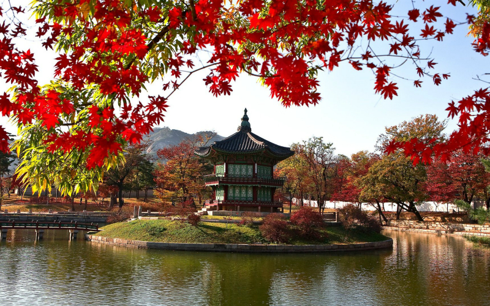
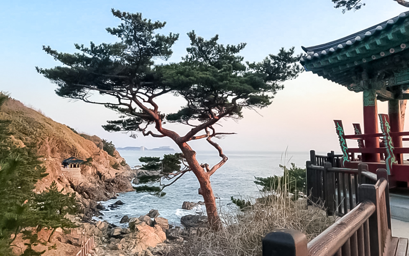
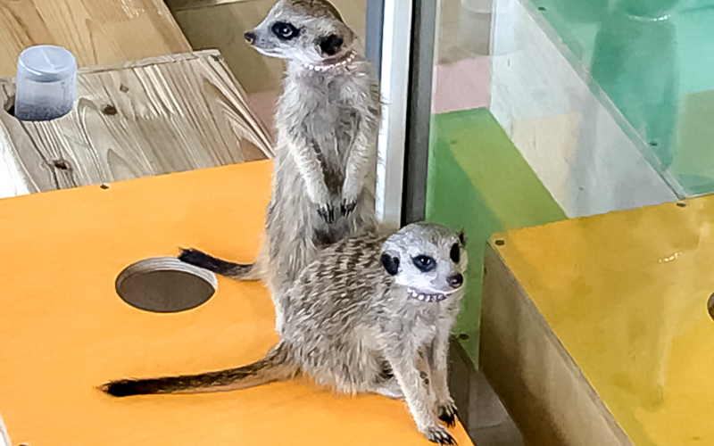
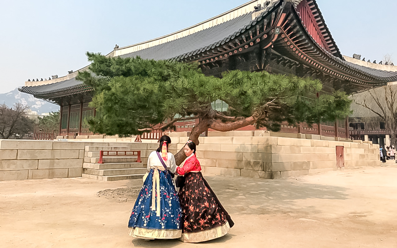

Південна Корея – унікальна країна, де поєднуються сучасні високотехнологічні зручності із старовинними палацами, що ретельно оберігаються державою.
Її пам’ятки – це старовинні будівлі, вражаюча природа та яскраві великі мегаполіси. На що звернути увагу в Південній Кореї, якщо ви потрапили туди вперше? Наша співробітниця розповість про найцікавіші місця та традиції цієї колоритної азіатської країни.
Чому саме Південна Корея?
Мене завжди цікавили унікальні країни, які відрізняються своїм сприйняттям світу. Також, цьогоріч, там проводили Зимові Олімпійські ігри, а моя подруга саме працює у МОК (Міжнародному Олімпійському Комітеті), тому маршрут було визначено швидко. Я потрапила не лише на Олімпійські ігри, тобто на їх відкриття, а ще й на завершення – передачу факелу іншій країні (наступною буде Китай).

У Кореї – так, люди доброзичливі. Більшість розмовляє англійською, у всіх провінціях можна знайти співрозмовників, що радо з тобою будуть спілкуватися міжнародною мовою. Але й такі, котрим важко. Був випадок, коли ми шукали банк. Підійшли й спитали у місцевих, що нам потрібен такий-то банк. Вони написали корейською назву банку і дали як орієнтир. І нам дійсно довелося ходити з цим папірцем та шукати схожі нариси, тому як англійською майже нічого не дублюється. За винятком Сеулу, звісно.
Мешканці Кореї залишили враження доброзичливих, турботливих але й з тим ярих поціновувачів своїх традицій та культури. І як то кажуть – «у чужий черевик ноги не саджай», це потрібно приймати або туди краще не їхати.
Країна цікава ще тим, що розвинене усе те, чого в країнах Європи ще немає. Наприклад, швидкісні потяги, електромобілі, таксі без водія. Особливо мені сподобалась система «обміну». В нас, наприклад, купуєш картку, проходиш через турнікет, а після подорожі викидаєш. А в них цю карту можна обміняти на дріб’язок. Тобто відбувається циркуляція. Теж саме роблять й зі сміттям. Його ретельно сортують, перероблять, та віддають на повторне виробництво.
Особливі риси міст Південної Кореї
Побували у Сеулі, Нангване, а також у Пхенчхані, де проводились Олімпійські ігри. Ці ці три міста кардинально різняться. Наприклад, Пхенчхана – це провінція Кореї, яка колись входила до списку найбідніших міст. Влада вирішила організувати там Олімпійські ігри та завдяки цьому трохи підняти економіку. У ході підготовки було збудовано Олімпійське поселення. Звісно, зараз усі квартири у місті вже продані. Тут своя атмосфера, тому що кожного разу з’являється щось нове, незвичне та інноваційне.
Сеул – це найбільший монстр, гігант. Цікаво було побачити імператорський палац. А те, де він знаходиться – найцікавіше. Поруч – великі висотні будівлі, авеню, галасливі натовпи. Якщо порівнювати з нашим центром, то в нас на фоні Кремля історично, приземлені будівлі, а далі, до спальних районів – сучасні будови. Тут поруч з палацом вже інновації. Це потрібно бачити в живу.
Сеул – він інший, абсолютно зрозумілий, в ньому неможливо заблукати. Це трохи інший рівень, поки що не зрозумілий для нашого сприйняття. Тут і машини, і автомати, і роботи, які спілкуються та допомагають людям. Наприклад, у метро роботи видають жетони, картки.
І третє місто – це маленьке, провінційне містечко Нангване. Ми обрали тур – подорож до буддистського храму. Там нам вдалося відпочити душею та осягнути культуру буддизму. Ціль поїздки була у тому, щоб перейняти життя, побут та культуру. Цікавий досвід. Хоч ми й тільки наслідували дії та поведінку інших. У Нангване дуже гарна природа: навколо – зелені насадження, водоспади, дерева, що зростають на скелях, і звісно ж, архітектура – храми, що збудовані над печерами, в котрих скляна підлога і у процесі медитації видно, як живе своїм життям вода. Відбувається якесь переосмислення.

Ми усі прагнемо розвитку та технічного прогресу, тому безсумнівно Сеул. Своїми розв’язками, транспортом, готелями і навіть маленькими дрібницями. Мені, наприклад, сподобалось що в них усе автоматизовано (навіть громадські зручності), повсюди працює безкоштовний інтернет. У готельних вбиральнях – прорезинена підставка для смартфону, щоб той випадково не впав.
Вразило, ще й те, що у Кореї «туалетна тема» постійно обігрується. У Сеулі є відомий «парк туалетів» і місцеві дуже полюблять цей парк. Є «туалетне» кафе, де усю їжі приносять у маленьких унітазах. Замовив капучіно, а тобі його принесли не в чашці, а в ємкості схожій на унітаз. Ми замовили грибний суп… Специфічне задоволення, звісно. Як до цього відноситися? Для корейців це просто, буденно.
Додати до звичних посиденьок за чашкою кави щось особливе завжди допоможуть антистресові кафе. Ми були у трьох таких. Перше – це собаче кафе. Сутність таких кафе ось у чому: приходиш, замовляєш напій, гостинець собаці та можеш грати з будь-якою з них, а можеш з усіма одразу. За бажанням, можеш узяти маленьку собачку собі на коліна, сидіти та гладити її.

Друге та третє – це кафе з сурикатами та кафе з кенгуру. При тому що я не боялась кенгуру, сурикати викликали в мене побоювання. Не знаю чому. Справа в тому, що сурикати дуже швидкі. Коли тільки заходиш до кафе, адміністратори просять знімати з себе усі аксесуари: сережки, кільця, шпильки. Краще навіть кишені вивернути, щоб там випадково не було якого-небудь папірця. Сурикати дуже цікаві, можуть своїми кігтями що небудь порвати. Що до кенгуру – в них дуже великі кігті та сильні хвости. Якщо випадково злякаєте їх, можете отримати серйозну травму.
Корейська кухня і місцеві делікатеси
Корейці полюблять щось смажене у фритюрі. Наприклад, спрінг-рол. Їх замовляють та готують самостійно. Спрінг-роли готуються наступним чином: тонкий рисовий коржик змочують у теплій воді на декілька секунд, щоб той був досить м’яким. Дістають та розкладають м’який коржик на тарілці. Потім варять та обсмажують овочі та м’ясо (на свій смак) у завчасно підготованому посуді. Коли все вже готове, на краєчок коржика кладуть овочі та м’ясо, акуратно згортають та занурюють у кисло-солодкий соус. Спочатку ми думали, що це звичайних hot-pot* (традиційна китайська страва), але у процесі приготування зрозуміли, що це ближче до традиційної «корейської теми».
Ще, звісно ж, вразило те, що більшість страв готується прямо на очах, у твоїй присутності. Наприклад, приходиш до ресторану перекусити, замовляєш овочі, гриби та м’ясо (овочі у розумінні корейців – це найчастіше, просто салат, а не помідори та огірки до яких ми звикли). До твого столика приносять щось схоже на піч, на якій змішують усі інгредієнти та смажать усе це поруч із тобою. Звісно, виходячи з такого місця, увесь одяг віддає їжею, але з іншого боку – спостерігати за процесом приготування дуже цікаво.
Частину з цього вже розповіла, але якщо брати традиційні, національні страви, то хочу почати з Кимчи. Кимча – це капуста, маринована в гострих національних спеціях. Різновидів одного рецепту цієї капусти дуже багато. Також, звісно, це рис, бульйони, місцеві овочі та різноманіття грибів. Але це не ті гриби, до яких ми звикли. Вони довгі, на великій ніжці. На смак, чесно, специфічні. Думаю, не кожен зважиться спробувати.
І на кінець про їжу. У Кореї, здається, всі полюблять каву. У кожному місті дуже велика кількість кав’ярень Starbucks. У якийсь момент, мені навіть здалося, що їх у декілька разів більше ніж у США. Але для любителів відокремленого відпочинку є невеликі кафе, зроблені з любов’ю, по типу домашніх ресторанчиків.
Найпопулярніші маршрути для туристів у Південній Кореї
Думаю, поки що тільки Сеул та його пам’ятки. Наприклад, Сеульська вежа та Імператорський палац. Але огляд вежі я не рекомендую: коли ми піднялися на неї, розглядіти хоч щось нам не вдалося через туман, а білет коштує не малих грошей.
Вражаюче видовище – прогулятися територією імператорського палацу. Далі – піти у глиб міста, вуличками, де до цього дня живуть місцеві довгожителі. У цих районах можна зустріти майже на кожній вулиці таблички «Будь ласка, говоріть тихіше». Потім знайти яку-небудь місцеву кав’ярню та замовити собі чай з кимчи…

Корея – це все-таки розвинена країна, тому дешево й бути не може. Знову таки, дивлячись з чім порівнювати. Іноді нам здається що туди де ми їдемо повинно бути дешевше, ніж у рідному місті. Наприклад, чашка кави у Кореї обійдеться у 6 доларів.
Повернутися на початок